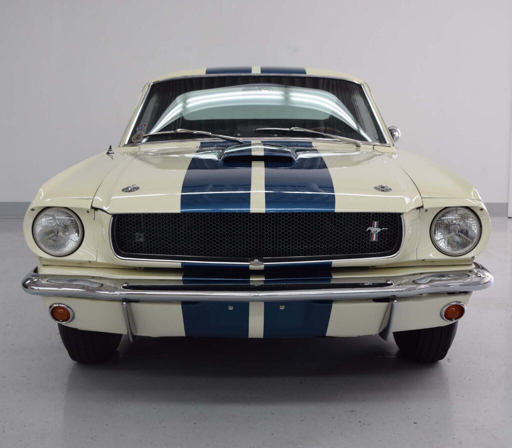
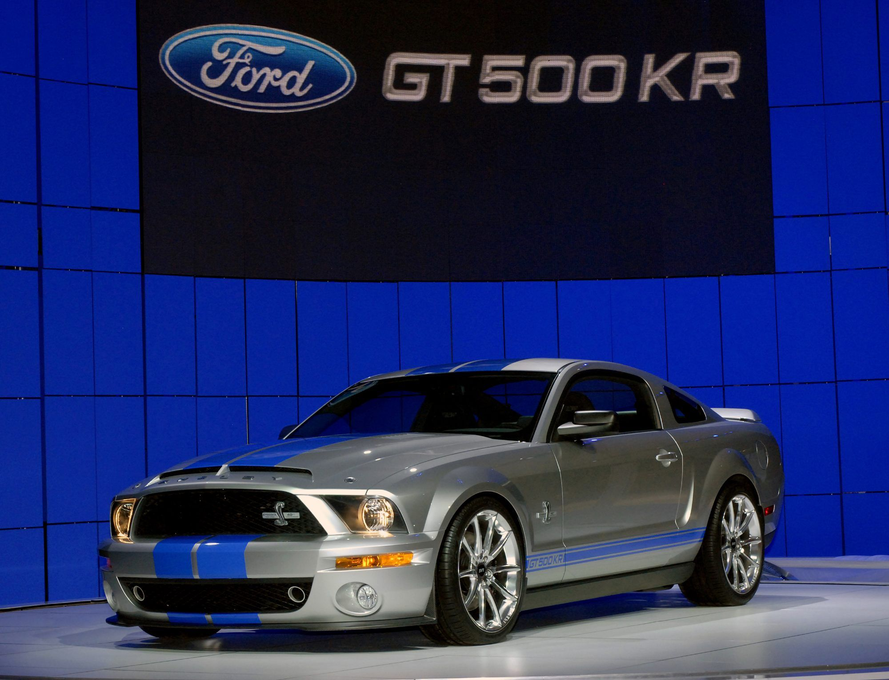

Los automóviles de 1965-1966 fueron los más pequeños y ligeros de los modelos GT 350. Estos a menudo se llamaban "Cobra", que fue el coche deportivo de dos asientos AC Cobra también producido por Shelby American durante el mismo período. Ambos modelos usaban el emblema Cobra, un esquema de pintura similar y la cubierta opcional de la válvula "Cobra" en muchos GT350, que formaban parte de un vínculo comercial de Shelby, así como uno de sus símbolos icónicos. Todos los coches de 1965-66 presentaron el bloque K-Code de 289 plg³ (4,7 litros) y 271 HP (275 CV; 202 kW), modificado para producir 306 HP (310 CV; 228 kW). La literatura de mercadotecnia se refería a este motor como el "Cobra hi-riser" debido a su elevado colector de admisión. Comenzando como un Mustang común con un cambio manual de cuatro velocidades y un eje trasero de 9 pulgadas (22,9 cm), los coches fueron enviados a Shelby American, donde recibieron los colectores de alta resistencia, los cabezales Tri-Y y recibieron mayores frenos de tambor traseros del Ford Galaxie con forros metálicos y frenos de disco delanteros Kelsey-Hayes.
Shelby GT500:
El G.T. 500 fue agregado a la alineación, equipado con un motor V8 "Ford Cobra Serie FE" de 428 plg³ (7 litros), con dos carburadores de cuatro gargantas Holley de 600 pies cúbicos por minuto (17,0 m³/min), sentado sobre un colector de admisión de aluminio de media altura.
Los planes documentados para introducir un año de producción media de un descapotable se archivaron debido a problemas de suministro, producción y financieros que sucedieron tan pronto como los primeros autos comenzaron a llegar a las instalaciones de Shelby en Los Ángeles en septiembre. En octubre de 1966, Ford tomó el control de la ingeniería y la compra.13 A.O. Smith fue golpeado para reparar el accesorio de fibra de vidrio.14 y problemas de calidad. Seis meses después, en mayo de 1967, se tomó la decisión de terminar la operación de Shelby, con sede en California. El 18 de agosto de 1967, un pequeño personal, junto con los restantes coches de ingeniería, fue enviado a Ionia (Míchigan). El pequeño personal de la recién formada Shelby Automotive, Inc. tuvo sustancialmente menos participación después de este tiempo.
Shelby GT500KR:
El Ford Shelby GT500KR, revelado en el Salón Internacional del Automóvil de Nueva York de 2007, se lanzó en la primavera de 2008. El automóvil está equipado con una versión sobrealimentada de 5409 cm³ (5,4 L; 330,1 plg³) con 540 HP (547 CV; 403 kW) de potencia del V8 base GT500, con función de entrada de aire frío y calibración única. SVT y Shelby anunciaron que 1000 ediciones del 40 aniversario se construirían para los Estados Unidos en 2008, con otras 571 unidades en 2009. Esta producción de 1571 unidades coincide con la del GT500KR original de 1968. En total, se produjeron 1712 unidades, con las unidades restantes destinadas a Canadá, los mercados de exportación y las ventas militares.
Todos los KR fueron construidos por AutoAlliance International en la línea de producción normal de Mustang y luego enviados a Shelby Automobiles Incorporated (SAI) donde se completó el montaje final. SAI fue el fabricante de registro.